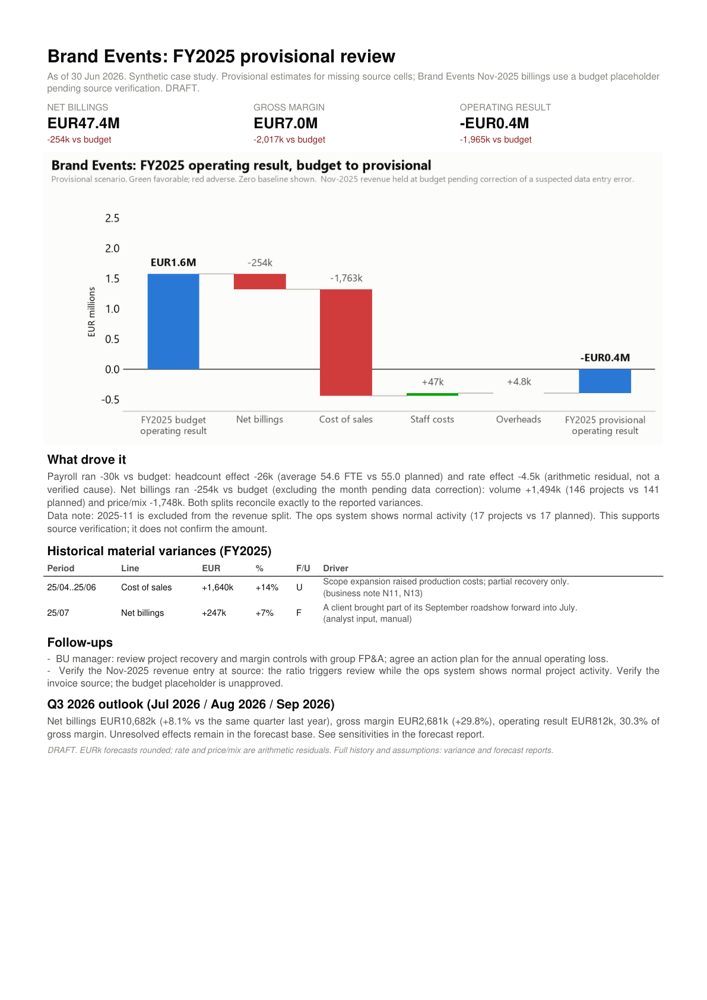
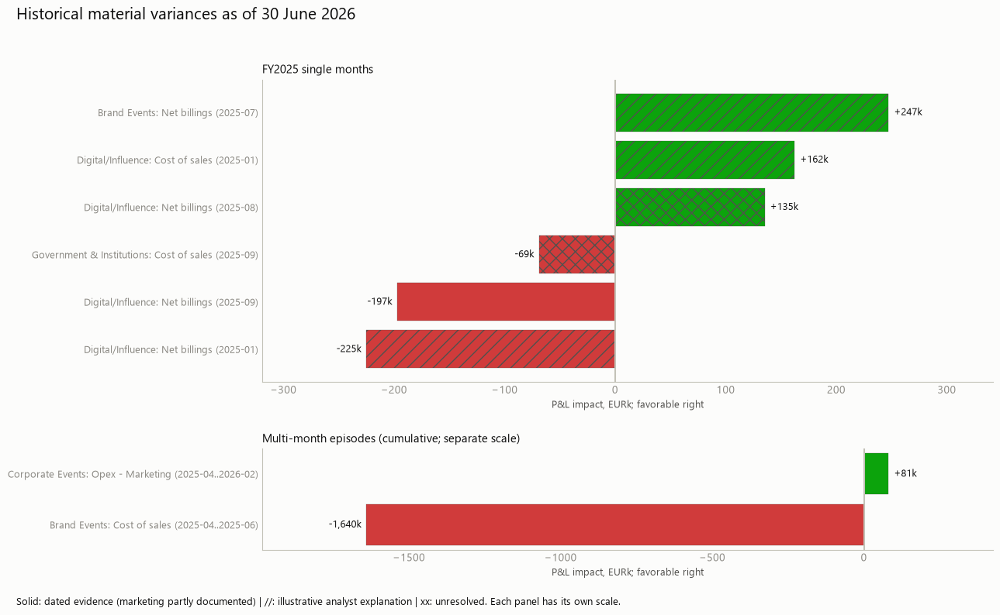
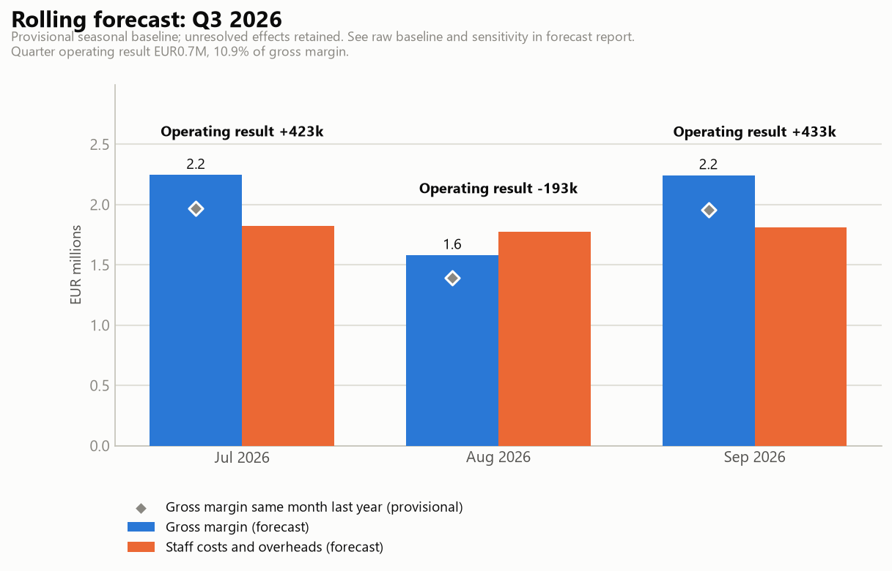

FP&A reporting automation
Variance analysis and a three-month forecast
I built this case study to demonstrate how I automate recurring FP&A reporting. It produces variance analysis, business-line reviews and a three-month forecast, with source checks and analyst review.
EventCo is a fictional events agency with four business lines. Reporting date: 30 June 2026. Historical review: FY2025; outlook: July-September 2026.
Start with the manager's report
Brand Events shows a FY2025 provisional operating loss of EUR391k. The report separates payroll into headcount and rate effects, and billings into project volume and price/mix.
The manager's next steps are to review recovery of the project overrun, tighten scope-change controls and confirm the November billings source. Rate and price/mix effects are arithmetic decompositions; the residuals do not independently establish causes.
Open the preview to read the full page.

A shortfall that needs a management response

The marketing run starts before the documented July 2025 in-housing change. Only July-December is attributed to that cause; the remaining months require review. The variance report keeps dated evidence, illustrative analyst input and unresolved items visible.
Executive assessment
FY2025 result, unresolved items and Q3 2026 risks.
Variance analysis
19 historical material items, with periods and evidence.
Draft management pack
Reports assembled for human review.
Historical variance rankings and data


Full 30-month history appendix · Download source and provisional variance columns (CSV)

Forecast, assumptions and risks
The selected provisional baseline forecasts EUR23.0M of net billings and EUR663k of operating profit. August shows an operating loss of EUR193k. The seasonal shape does not establish that the loss is acceptable.


A material variance is a reason to investigate. It is removed from history only after a confirmed one-off classification, approval, evidence and an explicit replacement value. Timing shifts and structural effects need a future schedule before an adjustment can be applied.
Four overlapping historical holdouts compare seasonal growth with a seasonal naive forecast. On this synthetic sample, growth has a higher mean absolute error (EUR26k per line-month versus EUR25k). These results support further model review.
What runs locally, and what needs judgment
- Clean dates, names and currency formatting. Keep missing source amounts blank and flag unusual budget ratios for verification.
- Compute material variances, link relevant dated notes and record analyst explanations separately. Keep unresolved items open.
- Build the provisional forecast, report the assumptions and compare historical holdouts. Require explicit recurrence review before changing history.
- Render business-line reports and scoped executive statements. Bind each statement to its unit, period, metric, signed amount and evidence.
- Run validation and assemble a draft. A failed required check returns a failing status and blocks the site build. Changed artifacts require validation again.
Data definitions
Net billings are invoiced amounts. Gross margin is billings less project costs. This simplified management P&L does not implement accounting revenue recognition, ARR or ACV restatement, a full close, or SAP/BPC integration.
Data handling
Calculations and default commentary run locally. Optional AI ordering sends a structured statement catalogue to the configured provider. Aggregation does not anonymize business context. Source scans are limited regression checks, not runtime network isolation.
Technical appendix: reproduction, checks and limitations
The input has 120 cleaned BU-month rows over January 2024-June 2026, with 11 P&L lines per row. All data is synthetic. The 13 analyst explanations are illustrative; driver data is consistent by construction.
.venv\Scripts\python.exe orchestrator.py --provisional
.venv\Scripts\python.exe showcase/build_site.pyWithout --provisional, unresolved source gaps stop reporting. The optional scenario records estimates in a separate adjustment ledger; these estimates are not approved actuals or budgets.
Calculations are reproducible for fixed inputs. Commentary uses constrained statements; changing wording requires a template change and review. Validation rejects arbitrary prose and does not claim to understand every possible financial assertion. Optional AI can reorder statements, so wording and ordering are not claimed to be identical across fresh AI calls.
Data quality report · QA report · Provisional cell ledger · Source code
Alan Vourc'h
I worked as Head of FP&A at a EUR100M events agency. This personal project brings that reporting experience together with Python to produce inspectable reports for finance and business teams.
I am looking for Senior FP&A, FP&A Manager and Finance & Strategy roles in Montréal.